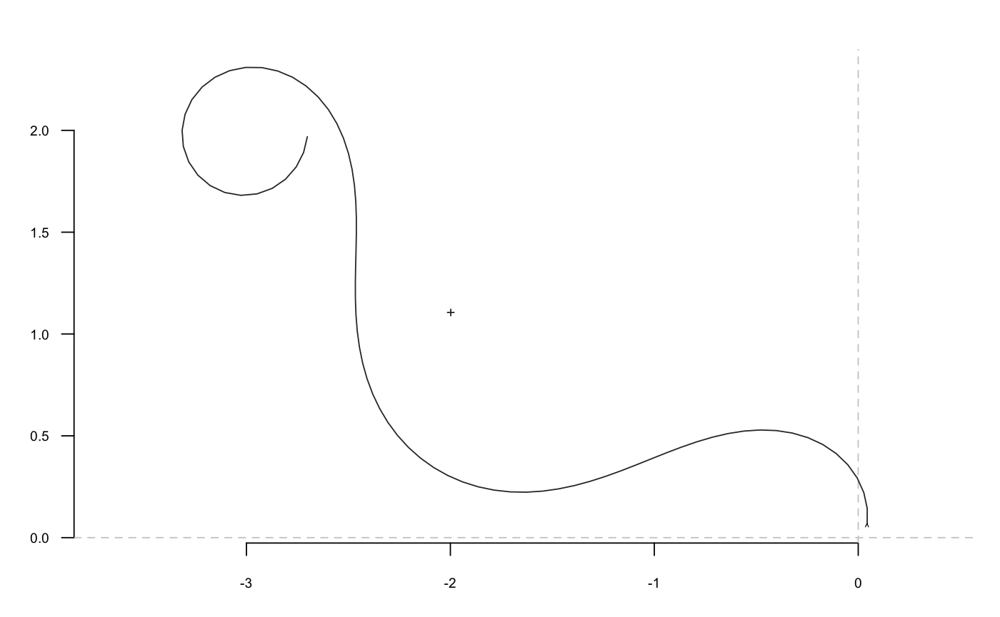

tfourier_i uses the inverse tangent angle Fourier transformation to
calculate a shape, when given a list with Fourier coefficients, typically
obtained computed with tfourier.
tfourier_i(tf, nb.h, nb.pts = 120, force2close = FALSE, rescale = TRUE, perim = 2 * pi, thetao = 0)
| tf | a list with ao, an and bn components, typically as returned by tfourier |
|---|---|
| nb.h |
|
| nb.pts |
|
| force2close |
|
| rescale |
|
| perim | The perimeter length to rescale shapes. |
| thetao |
|
A list with components:
vector of
x-coordinates.
vector of y-coordinates.
vector of interpolated changes on the tangent angle.
vector of position on the perimeter (in radians).
See tfourier for the mathematical background.
Directly borrowed for Claude (2008), and called ifourier2 there.
Zahn CT, Roskies RZ. 1972. Fourier Descriptors for Plane Closed Curves. IEEE Transactions on Computers C-21: 269-281.
Claude, J. (2008) Morphometrics with R, Use R! series, Springer 316 pp.
Other tfourier: tfourier_shape,
tfourier
#> $ao #> [1] 7.733739 #> #> $an #> [1] 0.0452247795 -0.3755623338 0.0276855331 0.9411732992 -0.3990148731 #> [6] -0.7763824605 -0.5768666699 0.0440901651 -0.7604537570 -0.4636638848 #> [11] -0.6086940781 -0.1408419257 -0.2906453466 0.1360186290 -0.2905320818 #> [16] -0.0013913889 0.0999975983 0.2531539067 -0.2409440735 -0.0107735036 #> [21] -0.0386305555 -0.0238992918 -0.1631252535 -0.0004085881 #> #> $bn #> [1] 0.008457058 2.526564125 -0.554083930 0.313312077 -0.288987146 #> [6] 0.032821965 -0.226300468 0.409651090 -0.021830547 0.015586993 #> [11] 0.414880500 0.677636372 0.197011887 0.180444429 0.433515510 #> [16] 0.237573437 0.107717915 0.027571558 0.054653201 -0.170505441 #> [21] 0.130595490 -0.014178384 -0.048221455 -0.127039009 #> #> $phi #> [1] 0.00000000 0.03394792 6.12970584 6.22607257 6.18054224 6.19051042 #> [7] 6.13580603 5.99700591 5.99842093 5.99084704 5.86041492 5.81488459 #> [13] 5.76506244 5.62887223 5.58334190 5.53781157 5.39732954 5.35179921 #> [19] 5.22136709 5.16746875 5.12193843 5.06723404 5.07720222 5.03804123 #> [25] 5.03308691 5.08250829 5.03697796 5.17966914 5.21216935 5.41953309 #> [31] 5.77457625 5.99961627 6.05629266 6.19411028 6.06367816 6.15041823 #> [37] 6.20005411 6.10694068 6.10899345 6.11083173 6.24864935 6.21627616 #> [43] 0.15041122 0.41687566 0.72706839 0.84208756 0.93719564 0.93924841 #> [49] 0.94130119 0.84818776 0.80265743 0.85207881 0.75917987 0.75672633 #> [55] 0.62053611 0.71690284 0.62442716 0.58361378 0.52907469 0.53478153 #> [61] 0.44702280 0.39677552 0.39819054 0.39061666 0.21281593 0.16728561 #> [67] 0.07417217 6.26424405 6.21871372 6.07886944 5.99538267 5.94148434 #> [73] 5.89595401 5.85879168 5.85121780 5.90000142 6.00172285 5.85652387 #> [79] 5.95289060 6.03171526 6.08391184 6.21482206 6.12821895 6.02776111 #> [85] 5.90179053 5.77058090 5.73820771 5.54311764 5.45064197 5.40081982 #> [91] 5.40652666 5.31405098 5.27323760 5.21869850 5.17746000 5.13664661 #> [97] 5.13334469 5.04086901 4.99104686 4.62111347 5.01682255 4.60719411 #> [103] 5.30626827 6.00978848 6.15257805 6.15247100 6.15452378 6.10899345 #> [109] 6.19573352 0.50480943 1.60303743 0.87544326 1.21632143 1.02825629 #> [115] 1.03030907 0.88982703 0.79735136 0.79876638 0.84818776 0.70770572 #> [121] 0.61523005 0.51420121 0.66606644 0.52558441 0.48434590 0.34125395 #> [127] 0.16219458 0.14695801 6.24944229 6.18612024 6.12136151 6.11662487 #> [133] 6.17219791 6.26019663 0.02904262 0.07417217 0.07622495 0.08278017 #> #> $t #> [1] 0.00000000 0.04553033 0.09106066 0.13659098 0.18212131 0.22765164 #> [7] 0.27318197 0.31871230 0.36424263 0.40977295 0.45530328 0.50083361 #> [13] 0.54636394 0.59189427 0.63742460 0.68295492 0.72848525 0.77401558 #> [19] 0.81954591 0.86507624 0.91060657 0.95613689 1.00166722 1.04719755 #> [25] 1.09272788 1.13825821 1.18378854 1.22931886 1.27484919 1.32037952 #> [31] 1.36590985 1.41144018 1.45697051 1.50250083 1.54803116 1.59356149 #> [37] 1.63909182 1.68462215 1.73015248 1.77568280 1.82121313 1.86674346 #> [43] 1.91227379 1.95780412 2.00333445 2.04886477 2.09439510 2.13992543 #> [49] 2.18545576 2.23098609 2.27651642 2.32204674 2.36757707 2.41310740 #> [55] 2.45863773 2.50416806 2.54969839 2.59522871 2.64075904 2.68628937 #> [61] 2.73181970 2.77735003 2.82288036 2.86841068 2.91394101 2.95947134 #> [67] 3.00500167 3.05053200 3.09606233 3.14159265 3.18712298 3.23265331 #> [73] 3.27818364 3.32371397 3.36924430 3.41477462 3.46030495 3.50583528 #> [79] 3.55136561 3.59689594 3.64242627 3.68795659 3.73348692 3.77901725 #> [85] 3.82454758 3.87007791 3.91560823 3.96113856 4.00666889 4.05219922 #> [91] 4.09772955 4.14325988 4.18879020 4.23432053 4.27985086 4.32538119 #> [97] 4.37091152 4.41644185 4.46197217 4.50750250 4.55303283 4.59856316 #> [103] 4.64409349 4.68962382 4.73515414 4.78068447 4.82621480 4.87174513 #> [109] 4.91727546 4.96280579 5.00833611 5.05386644 5.09939677 5.14492710 #> [115] 5.19045743 5.23598776 5.28151808 5.32704841 5.37257874 5.41810907 #> [121] 5.46363940 5.50916973 5.55470005 5.60023038 5.64576071 5.69129104 #> [127] 5.73682137 5.78235170 5.82788202 5.87341235 5.91894268 5.96447301 #> [133] 6.01000334 6.05553367 6.10106399 6.14659432 6.19212465 6.23765498 #> #> $perimeter #> [1] 2513.886 #> #> $thetao #> [1] -1.508378 #> #> $x1 #> [1] 37 #> #> $y1 #> [1] 561 #>#> x y #> [1,] -0.071302113 -0.02269798 #> [2,] -0.135133895 -0.07014437 #> [3,] -0.191778995 -0.12597436 #> [4,] -0.239132494 -0.18987508 #> [5,] -0.274966272 -0.26087928 #> [6,] -0.297107229 -0.33726929 #> [7,] -0.303670460 -0.41653202 #> [8,] -0.293332446 -0.49539127 #> [9,] -0.265616797 -0.56993990 #> [10,] -0.221153253 -0.63588419 #> [11,] -0.161862874 -0.68889651 #> [12,] -0.091021820 -0.72505174 #> [13,] -0.013165390 -0.74130081 #> [14,] 0.066186187 -0.73591722 #> [15,] 0.140970458 -0.70884383 #> [16,] 0.205152233 -0.66187197 #> [17,] 0.253349356 -0.59860513 #> [18,] 0.281426005 -0.52419171 #> [19,] 0.286962574 -0.44485066 #> [20,] 0.269527236 -0.36725127 #> [21,] 0.230705984 -0.29783538 #> [22,] 0.173888825 -0.24218049 #> [23,] 0.103850725 -0.20449335 #> [24,] 0.026197910 -0.18729754 #> [25,] -0.053233148 -0.19134263 #> [26,] -0.128937702 -0.21572452 #> [27,] -0.196195840 -0.25817447 #> [28,] -0.251373623 -0.31545508 #> [29,] -0.292059089 -0.38379503 #> [30,] -0.317046732 -0.45930181 #> [31,] -0.326203113 -0.53830697 #> [32,] -0.320255773 -0.61761829 #> [33,] -0.300548142 -0.69467194 #> [34,] -0.268796891 -0.76759323 #> [35,] -0.226878176 -0.83518373 #> [36,] -0.176658234 -0.89685718 #> [37,] -0.119873995 -0.95254565 #> [38,] -0.058061870 -1.00259479 #> [39,] 0.007471817 -1.04766132 #> [40,] 0.075647593 -1.08862129 #> [41,] 0.145586046 -1.12649303 #> [42,] 0.216565953 -1.16237490 #> [43,] 0.287974503 -1.19739596 #> [44,] 0.359255404 -1.23267611 #> [45,] 0.429859458 -1.26929200 #> [46,] 0.499201288 -1.30824538 #> [47,] 0.566625307 -1.35043137 #> [48,] 0.631383485 -1.39660533 #> [49,] 0.692627021 -1.44734865 #> [50,] 0.749413313 -1.50303503 #> [51,] 0.800728659 -1.56380008 #> [52,] 0.845525818 -1.62951819 #> [53,] 0.882774006 -1.69979072 #> [54,] 0.911517300 -1.77394919 #> [55,] 0.930936007 -1.85107616 #> [56,] 0.940404631 -1.93004451 #> [57,] 0.939539937 -2.00957380 #> [58,] 0.928233304 -2.08830001 #> [59,] 0.906663203 -2.16485317 #> [60,] 0.875285880 -2.23793614 #> [61,] 0.834804967 -2.30639745 #> [62,] 0.786123226 -2.36929215 #> [63,] 0.730281686 -2.42592587 #> [64,] 0.668392601 -2.47587982 #> [65,] 0.601572978 -2.51901674 #> [66,] 0.530884803 -2.55546997 #> [67,] 0.457286800 -2.58561942 #> [68,] 0.381600938 -2.61005927 #> [69,] 0.304495177 -2.62956202 #> [70,] 0.226482459 -2.64504335 #> [71,] 0.147934876 -2.65753066 #> [72,] 0.069111276 -2.66813707 #> [73,] -0.009803690 -2.67804080 #> [74,] -0.088651116 -2.68846861 #> [75,] -0.167242056 -2.70068007 #> [76,] -0.245296636 -2.71594894 #> [77,] -0.322380905 -2.73553647 #> [78,] -0.397845309 -2.76065179 #> [79,] -0.470770276 -2.79239459 #> [80,] -0.539926325 -2.83167686